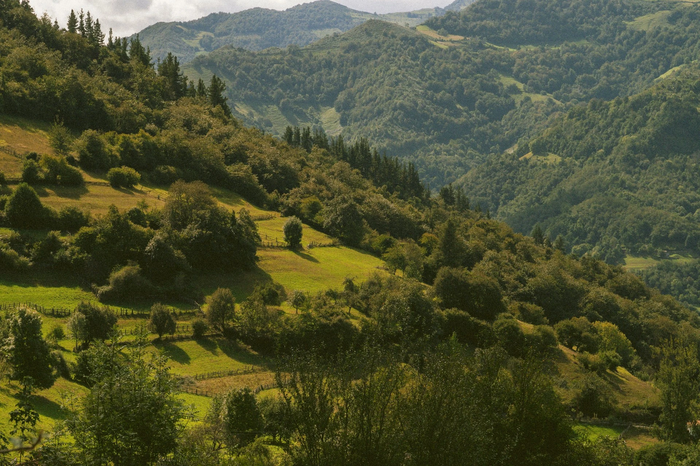
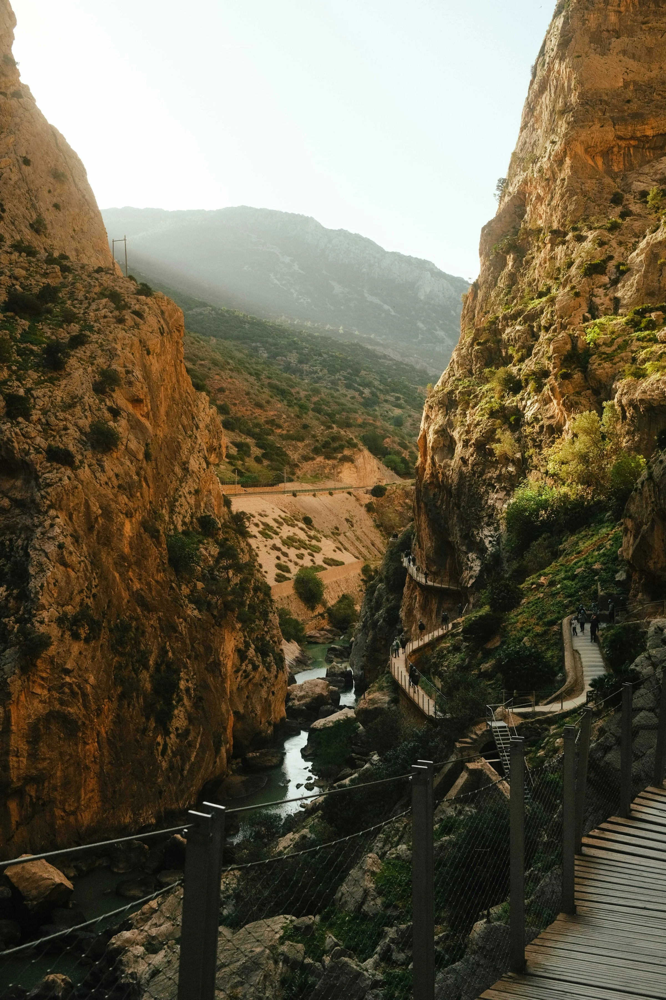
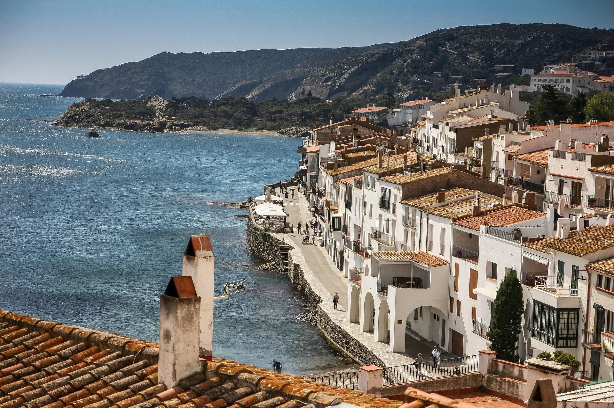

Desconecta en el norte
Descubre Asturias entre paisajes verdes, pueblos con encanto y rutas naturales. Una escapada para disfrutar con amigos, explorar la costa y desconectar rodeados de naturaleza.

Ruta malagueña.
Descubre Málaga entre calles llenas de vida, lugares emblemáticos y playas. Una escapada para disfrutar con amigos, probar su gastronomía y descubrir la Costa del Sol.
Encanto andaluz.
Descubre Granada entre calles con encanto, monumentos históricos y rincones únicos. Una escapada para disfrutar con amigos, descubrir su gastronomía y compartir nuevas experiencias.

Pierdete conmigo.
Descubre la Costa Brava entre calles blancas, pequeñas calas y atardeceres junto al mar. Una escapada en pareja para desconectar, disfrutar y compartir momentos especiales.
Ciudad por descubrir
Descubre Zaragoza entre calles con historia, rincones especiales y buena gastronomía. Una escapada para conocer la ciudad, compartir experiencias y salir de la rutina.